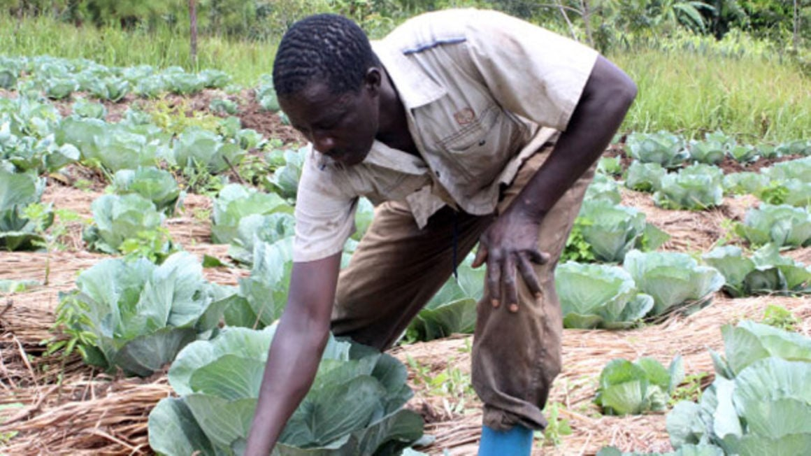

Why is food security such a major global challenge?
The obvious reason is that everybody needs food. But the complexity of delivering sufficient
food to a national population and to the whole world’s population shows why food security is
such a priority for all countries, whether developing or developed.
In short, this is a global challenge because it’s not just about food and feeding people, but
also about practically all aspects of an economy and society.
1. Population growth – this varies considerably across countries. Sub-Saharan Africa is
expected to double its population from one to two billion by 2050. Populations in the developing
world are also becoming increasingly urbanized, with 2.5 billion additional urban residents
projected in Africa and Asia.
2. Changing tastes – not only is the population growing, but its diet is changing, too. As
people become more affluent they start eating food that is richer in processed foods, meat and
dairy. But to produce more meat means growing more grain.
3. Climate change – currently, 40% of the world’s landmass is arid, and rising temperatures will
turn yet more of it into desert. At current rates, the amount of food we’re growing today will
feed only half of the population by 2050.
4. Water scarcity – 28% of agriculture lies in water-stressed regions. It takes roughly 1,827
litres of water to produce a kilogramme of wheat, and the number of people facing water
shortages could double by 2050.
5. Troubled farmers – fewer people are choosing farming as an occupation. Meanwhile, global food
prices are rising, arable land continues to be lost to urban sprawl and soil is being degraded
by over-farming.
Consider India. Agriculture accounts for 18% of the economy’s output and 41% of its workforce.
India is the second biggest producer of fruits and vegetables in the world. Yet according to the
Food and Agriculture Organization (FAO) of the United Nations, some 189 million Indians are
undernourished, the largest number of hungry people in any single country. An estimated 14% of
the population of India are too malnourished to lead a normal life.
overflow.

There must be food for everyone
One of the farmers growing food in order to ensure that everyone has access to three meals a day.